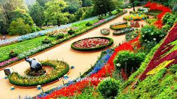
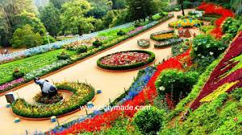
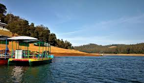
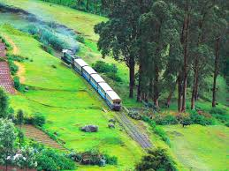
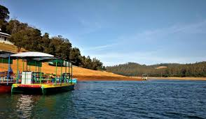
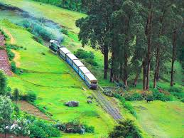
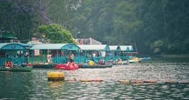
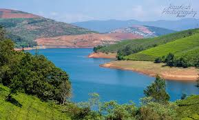
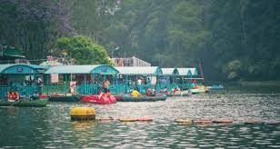
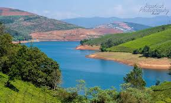

Nilgiri Mountain Railway (Toy Train)
UNESCO-listed train through tunnels, hills and tea gardens.
Ooty, the “Queen of Hill Stations,” sits in the Nilgiri Mountains with cool weather, tea gardens, viewpoints and an old colonial-town charm. The star attraction is the UNESCO-listed toy train connecting Ooty–Coonoor, one of India’s most scenic railway routes.
The town has lakes, botanical gardens, pine forests and short scenic drives. Many travellers combine Ooty with Coonoor for tea estates and peaceful stays with valley views.
UNESCO-listed train through tunnels, hills and tea gardens.
Calm lake with boating and sunset spots near the town centre.
Large, well-kept gardens dating back to 1848.
Highest point in the Nilgiris with panoramic views.
Ride the Nilgiri Mountain Railway through green valleys and tea fields.
See how tea is made and walk through estate viewpoints.
Drive up early for clear views before clouds form.
Combine Coonoor if you want quieter tea views.
Short visit
Balanced trip
3–4 days
Good access to town, boating and food options.
Best for first-time visitors.
Tea estates, quiet stays, valley views and boutique hotels.
Ideal for peaceful nature stays.
Resorts with views, greenery and family-friendly options.
Great for long, slow holidays.
 

 



 



Simple habits for smooth hill-station travel.